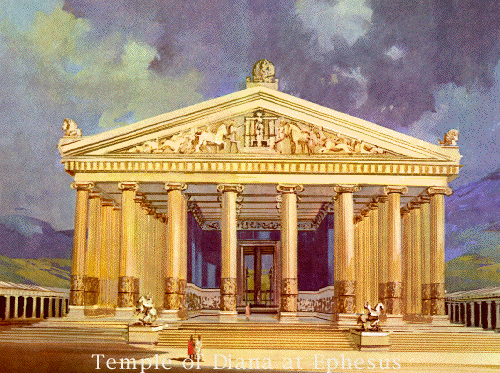

The Temple of Artemis at Ephesus
Also known as the Temple of Diana, was built around 550 B.C. at Ephesus, Turkey by Achaemenid dynasty rulers of the Persian Empire. The temple was started by Croesus of Lydia. Antipater of Sidon described the temple this way:
I have set eyes on the wall of lofty Babylon on which is a road for chariots, and the statue of Zeus by the Alpheus, and the hanging gardens, and the colossus of the Sun, and the huge labour of the high pyramids, and the vast tomb of Mausolus; but when I saw the house of Artemis that mounted to the clouds, those other marvels lost their brilliancy, and I said, 'Lo, apart from Olympus, the Sun never looked on aught (anything) so grand."
The Temple of Artemis was one of the largest and grandest temples in the Ancient World. The cult of Artemis was practiced from Troy to the Bible. One of the books of the New Testament is about the church at Ephesus (Ephesians) and the power that the cult of Artemis had over the region. The Temple of Artemis was burned down by Herostratus on July 21, 356 B.C., which is the same night that Alexander the Great was born. His motivation for this act of arson was to gain fame at any cost. The term 'Herostratic fame' comes from this unfortunate event. Alexander offered to pay for reconstruction of the temple, which Plutarch believed to be due to Artemis being too preoccupied with Alexander's birth to sufficiently watch over her temple. However, the Ephesians refused Alexander's patronage. The temple was restored in 323 B.C., which is after Alexander died.
The temple was destroyed a second time in 262 by raiding Goths. Again, the Ephesians rebuilt the temple. Paul of Tarsus prayed publicly at the Temple of Artemis to purge it of its demons. The temple was closed by Theodosius I in 391 and was finally, permanently destroyed in 401 by a mob led by Saint John Chrysostom. The stones from the Temple of Artemis were used in other building projects and some of the columns of the temple of Artemis were used to build the Hagia Sophia.